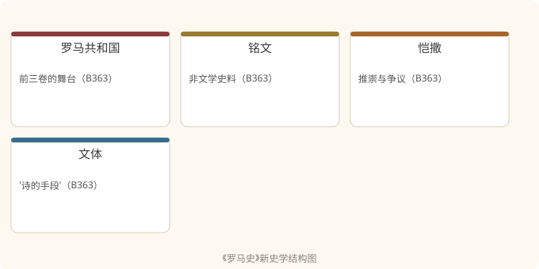

罗马史
一、基本信息
| 作者 | 特奥多尔·蒙森 |
|---|---|
| 成书/出版 | 1854-56/1885年（Britannica B363：前三卷1854-56——第五卷1885） Theodor Mommsen — Encyclopaedia Britannica（百科全书） |
| 国别/地区 | 德国 |
| 时代 | 近代 · 19世纪50-80年代 |
| 体裁 | 史学著作 |
| 语言 | 德语 |

《罗马史》新史学结构图（主题·结构图）
二、创作背景
Britannica（B363）：'famous for his masterpiece, Römische Geschichte (The History of Rome)'——前三卷1854-56——第五卷(1885)帝国行省史——'No one but Mommsen could have depicted this period in so authoritative a manner'。
Britannica（B363）：'embodied the new historical method'——批判地审视传统、拒绝启蒙派对古典时代的理想化。
Britannica（B363）：'he used the means of poetry and enjoyed exercising his poetic talent'——蒙森的文体艺术。
三、内容脉络
共和国史（前三卷，至塔普苏斯战役46 BC——B363）。
帝国行省史（第五卷，1885——B363）；第四卷（皇帝史）未写——'he felt that he would not be capable of writing it in the same brilliant style'（B363）。
四、主要人物表
| 人物 | 身份 | 说明 |
|---|---|---|
| 恺撒 | 被推崇的独裁者 | （B363：glorification of the dictator Caesar） |
| 西塞罗/庞培 | 被贬低的对手 | （B363：disparagement） |
五、主题与艺术特点
- 新史学方法（B363：critical examination of traditions）。
- '去神话化'的罗马史（B363：demythologizing Roman history）。
- 对恺撒的推崇与自由主义的张力（B363）。
六、影响与评论
- Britannica：1902年诺贝尔文学奖（B363）。
Theodor Mommsen — Encyclopaedia Britannica（百科全书） - Britannica：铭文集成作为学术丰碑（B363 交叉）。
Theodor Mommsen — Encyclopaedia Britannica（百科全书）
七、阅读建议
难点
- 罗马共和政治制度。
- 19世纪史学方法的语境。
- 《罗马史》中译本（商务印书馆等——通说待核）。
- 德文原版（公有领域）。
史学类首选之一；配合《罗马十二帝王传》等古典著作阅读。
八、待核实
- 中译本细节核对。
- 第四卷未写的细节（B363已载）。
- 'squirearchy and the cloth'译法待核。
本页主要来源
特奥多尔·蒙森的其他收录作品：罗马史